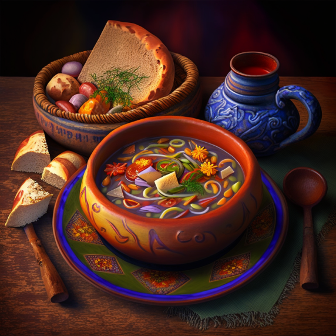
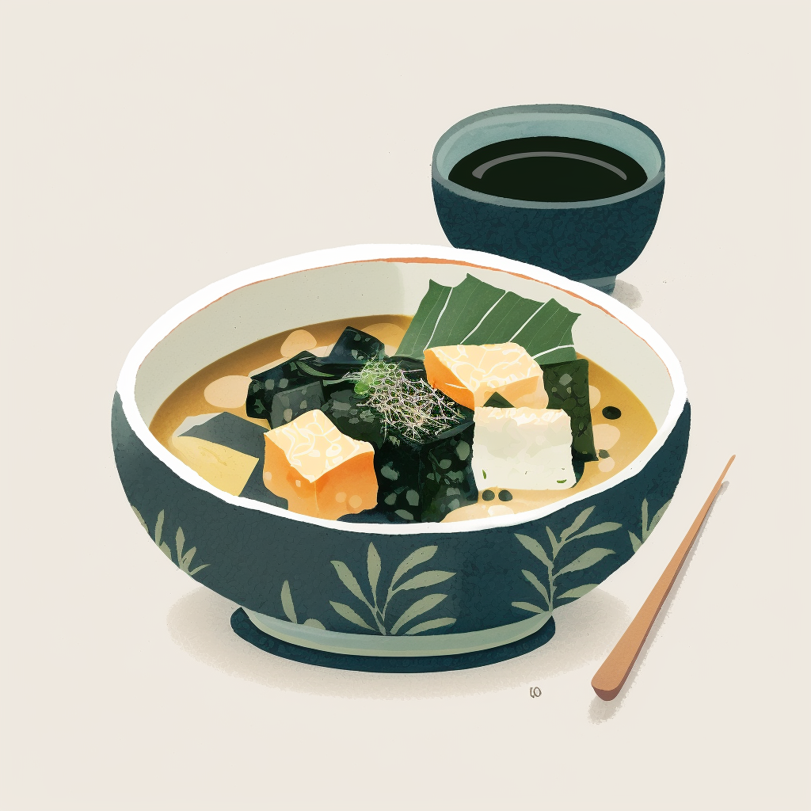
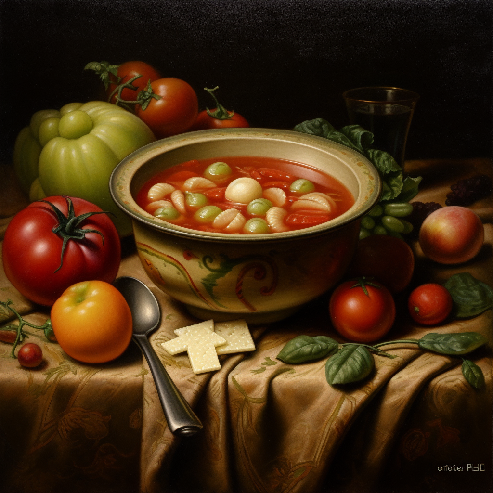
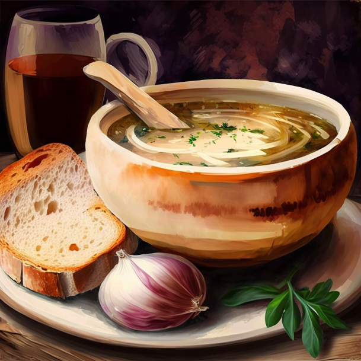

die Hausmannskostserie

Hausrezept - Ungarische Gulasch

Hausrezept - Japanische Miso-Suppe

Hausrezept - Genuesische Minestrone-Suppe
Hausrezept - Orangefarbene Suppe

Hausrezept - Französische Zwiebelsuppe